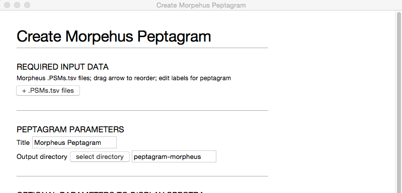
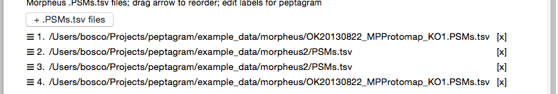
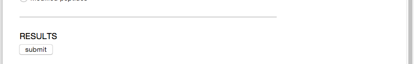
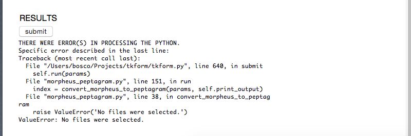
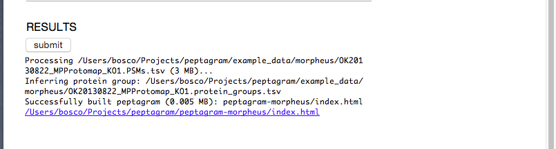
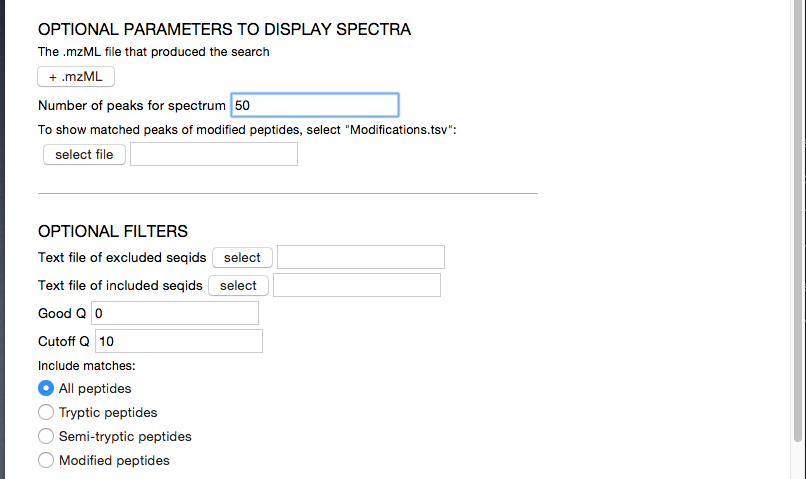

The purpose of peptagram is to visually compare peptide hits in proteins between experiments.
Peptagram can read peptide-spectrum match results from Morpheus, Mascot, Maxqaunt, ProtXML/PepXML, X!Tandem and ProteinPilot.
For each type of search results, we provide a script that can be run on the command-line, or in a GUI. For a set of example test data, please download http://monash.edu/proteomics/peptagram/example_data.zip into your peptagram directory, and unzip into sub-directory called example_data.
Let's look at generating a peptagram from the Morpheus search results.
Morpheus is a fast search engine designed for high-quality data. As Morpheus does not come with a bundled viewer, peptagram provides a unique tool to view Morpheus search results.
The scripts that process Morpheus all start with morpheus_peptagram. They are:
morpheus_peptagram.command - which can be clicked in Finder on Mac OSXmorpheus_peptagram.bat - which can be clicked in WIndows Filer Explorermorpheus_peptagram.py - which is run on the command-line as python morpheus_peptagram.py -iIf you've downloaded the example data, you can run a default test:
python morpheus_peptagram.py test
To use morpheus_peptagram, first start the program, then you should get a window that looks something like this:

To load the Morpheus files, click + PSMs.tsv files and select all the .PSMs.tsv files that you want to compare. morpheus_peptagram will figure out the corresponding .protein_group.tsv files from these filenames.
Once selected, you'll see a list of files:

You can now reorder the .PSMs.tsv files into your preferred order by dragging the ☰ icon.
Then you can scroll down to the bottom, and click the submit button:

If there are any errors encountered, they'll appear below the submit button. Hopefully the error message at the last line will help you trouble-shoot the problem, and then you can click submit again.

If it worked, you'll get a link to a newly created directory containing your peptagram:

Later, you might want to tweak the options, such as loading the spectra from the original .mzML files, or restricting the display to matches by the Q-score.

morpheus_peptagram - processes Morpheus search engine results. Requires the modifications.tsv file for modified peptides, and optionally the .mzML file if you want to display spectramascot_peptagram - processes Mascot .dat. Shows the spectra for each PSM. Requires the original .fasta file to get the full length protein sequencesmaxquant_peptagram - process Maxquant txt/summary directories. Shows the matched ions in the spectra only. Requires the original fasta file to get the full length protein sequences.prophet_peptagram - processes the TPP's prot.xml and pep.xml files. Requires the original .fasta file to get the full length protein sequencesxtandem_peptagram - processes X!Tandem search results. Shows the spectra for each PSM.pilot_peptagram - processes Protein Pilot .txt/.csv result files. Requires the original .fasta file to get the full length protein sequencesAs some peptagrams can get really big easily, there are a number of options to filter out low-quality matches, from using quality scores like pep and ionscore. As well, you can always load text-files of contaminants to exclude, and/or seqids of interest. As well, there are a number of peptide filtering options.
After you're created the peptagrams using the scripts described above, you can now recombine and edit them using:
reorder_peptgramWith reorder_peptgram.py, you can load existing peptagrams, stacking all the individual rows of the peptagrams against each other.
Then you reorder and relabel each row to your hearts content, before saving it to a new peptagram.
The only catch is that the sequence IDs of your proteins have to match exactly. You must ensure that the sequence ID used in the corresponding FASTA databases are the same.